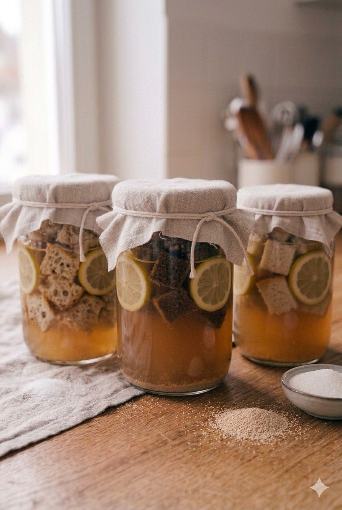

Terlalu biasa kalau pakai roti hanya dengan selai dan daging, lebih unik lagi kalau roti dijadikan minuman fermentasi yang menyegarkan!
Yuk, kenalan dengan minuman fermentasi yang berasal dari daerah Slavia bernama Kvass!
Bioteknologi merupakan cabang ilmu yang memanfaatkan makhluk hidup, terutama mikroorganisme, untuk menghasilkan produk yang bermanfaat bagi manusia. Salah satu bentuknya adalah bioteknologi konvensional, yaitu pemanfaatan mikroorganisme secara alami tanpa rekayasa genetika modern. Proses yang sering digunakan dalam bioteknologi konvensional adalah fermentasi, yaitu proses ketika mikroorganisme seperti ragi atau bakteri mengubah gula menjadi senyawa lain seperti asam, gas karbon dioksida, atau sedikit alkohol. Salah satu minuman yang dihasilkan melalui proses ini adalah kvass. Meski kvass biasanya dibuat dari roti gandum hitam yang telah dipanggang hingga kering, pada blog ini, akan dipelajari pula pembuatan kvass dengan jenis roti lain. Karena, susah menemukan di roti gandum hitam di beberapa daerah. Maka, blog ini mempelajari bila roti sourdough dan roti tawar putih menjadi bahan baku kvass. Proses yang dilalui akan sama saja. Roti akan dioven hingga kering. Kemudian direndam dalam air agar sari roti larut sebelum difermentasi dengan bantuan ragi atau mikroorganisme alami. Selama proses fermentasi berlangsung, gula yang berasal dari roti akan diuraikan oleh mikroorganisme sehingga menghasilkan gas karbon dioksida dan berbagai senyawa yang membentuk aroma serta rasa khas pada minuman tersebut.
1. Siapkan roti sourdough, roti gandum hitam, dan roti tawar putih.
2. Potong setiap roti menjadi kubus kecil menggunakan pisau dan talenan, lalu pisahkan tiap jenis roti pada piring yang berbeda.
3. Panaskan oven hingga 180°C.
4. Panggang setiap jenis roti selama ±15 menit hingga lebih garing dan warnanya sedikit menggelap.
5. Siapkan tiga wadah kaca, lalu isi masing-masing dengan 1,5 L air matang.
6. Masukkan tiap jenis roti ke dalam wadah kaca yang berbeda dan beri label sesuai jenis rotinya.
7. Tutup wadah dan biarkan roti terendam selama 24 jam.
8. Setelah 24 jam, saring roti dari air rendaman, lalu peras kembali menggunakan kain saring.
9. Masukkan kembali air hasil saringan ke dalam wadah kaca sesuai labelnya.
10. Untuk perasa, siapkan 3 buah jeruk dan 3 mangkuk lalu isi masing-masing mangkuk dengan perasan air jeruk.
11. Tuang satu mangkuk berisi air jeruk tersebut ke masing-masing wadah kvass.
12. Siapkan instant yeast atau ragi instan seperti fermipan dan sendok teh sebagai takaran.
11. Tambahkan ½ sendok teh ragi instan ke setiap wadah.
12. Aduk menggunakan sendok plastik yang berbeda untuk setiap wadah agar tidak memengaruhi rasa.
13. Tutup mulut wadah dengan tisu dapur, lalu tutup kembali dengan penutup wadah kaca.
14. Biarkan proses fermentasi berlangsung dan lakukan pengecekan rutin setiap 8 jam pada awal fermentasi.
15. Pada pengamatan ketiga biasanya muncul endapan abu gelap; tetap aduk hingga pengamatan keempat.
16. Pada pengamatan kelima, pindahkan kvass ke botol kaca tanpa endapan menggunakan sendok plastik dan corong.
17. Simpan kvass di dalam kulkas untuk memperlambat fermentasi agar rasanya tidak terlalu asam.
